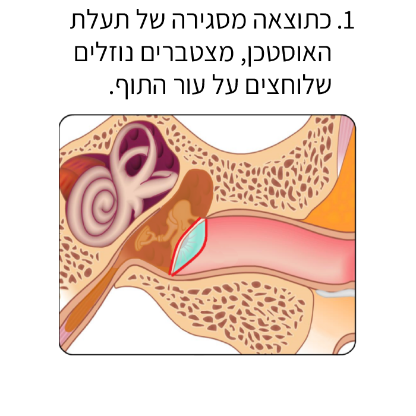
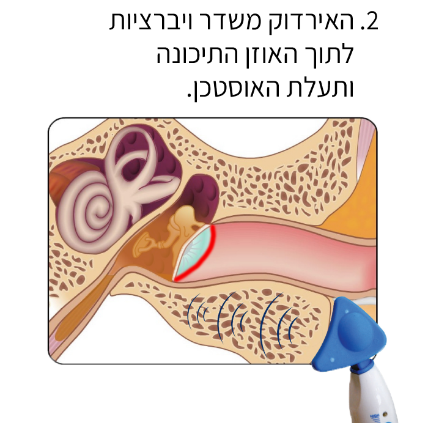
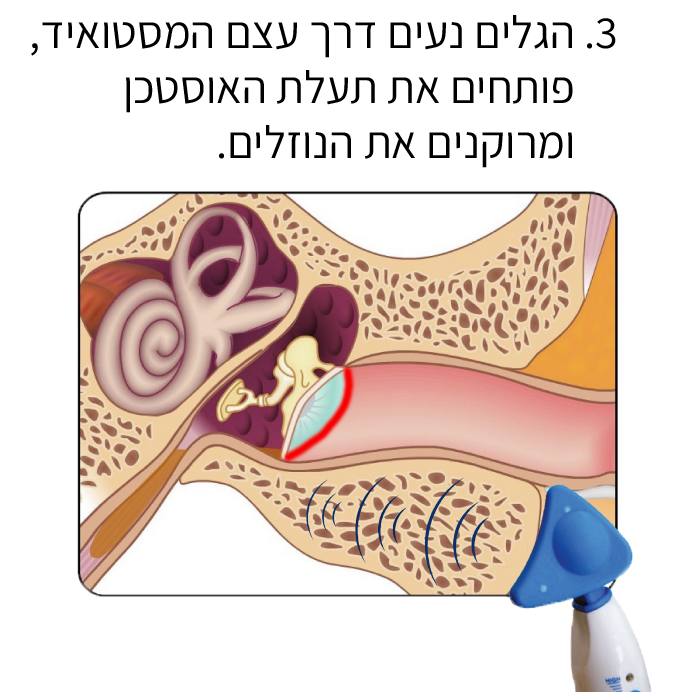

-
אני הורה וילד/ה
הגעת לאתר הדרכה של האירדוק, מכשיר שעוזר להתגבר על כאבים באוזניים. יכול להיות שהכאבים מקשים על ילדך בלימודים או עם חברים, ואנחנו כאן כדי לעזור.
כיצד האירדוק משפיע על האוזן?



-
מבנה האוזן
כדי להבין את אופן הפעולה של האירדוק טוב יותר, נלמד על החלקים השונים של האוזן
לחיצה על על כפתור שליד כל חלק באוזן תחשוף מידע אודותיו
כיצד האירדוק משפיע על האוזן?
נא להכיר: מכשיר האירדוק
אפשר לסובב את המכשיר וללחוץ על הנקודות השונות כדי להכיר את מבנה האירדוק
-
טיפים לפני השימוש
הרבה פעמים ילדים וילדות חוששים מדברים חדשים, לכן הינה כמה טיפים שיכולים לעזור:
אם הרטט מפחיד את הילד/ה
הפעילו את המכשיר ואפשרו לילד/ה לגעת בו על מנת להרגיש את הרטט העדין, הסבירו שהאירדוק אינו מפחיד ולא מזיק.אם הילד/ה חושש/ת מהשימוש במכשיר
תוכל להראות לילדכם/ן סרטונים של ילדים אחרים שהשתמשו במכשיר צפו כאן בסרטון